★ Uma viagem ao nascimento da sétima arte ★
Cinema Primitivo (1895–1915)
De curiosidade científica à arte de contar histórias
Entre 1895 e 1915, o cinema deixou de ser uma simples curiosidade tecnológica para se tornar uma forma de arte capaz de emocionar, encantar e narrar histórias. Foram anos de experimentação, invenção e ousadia: truques visuais, primeiras animações, narrativas cada vez mais complexas e produções grandiosas que lançaram as bases da linguagem cinematográfica moderna.
O que marca essa era?
🎥 Filmes muito curtos no início, depois longas cada vez maiores 🎩 Truques, ilusionismo e efeitos especiais 📖 Adaptações literárias, peças teatrais e temas históricos e religiosos ◉ Nascem a montagem, os gêneros e a linguagem narrativa
★ Um filme para cada ano: 1895–1915 ★
0/31 filmes marcados
Limpar marcações
1895
🚂
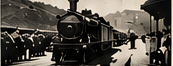
A Chegada do Trem à Estação
(França, Irmãos Lumière)
Um dos primeiros filmes já existentes. Registro do cotidiano que impressionou os primeiros espectadores.
1896
🏰
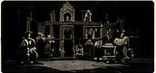
Le Manoir du Diable
(França, Georges Méliès)
Filme de terror e efeitos especiais. Méliès torna-se o grande mago do cinema primitivo.
1896
✦
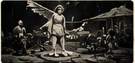
La Fée aux Choux
(França, Alice Guy)
Uma das primeiras narrativas ficcionais da história do cinema. A fada faz o bebê nascer de um repolho.
1897
♟
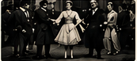
After the Ball
(França, Georges Méliès)
Cena de dança com truques como a troca de figurinos e aparições mágicas.
1898
◉
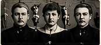
The Four Troublesome Heads
(França, Georges Méliès)
Quatro cabeças ganham vida e interagem. Efeitos simples, porém muito imaginativos.
1899
⌁
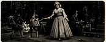
Cinderella
(França, Georges Méliès)
Uma das primeiras adaptações de conto de fadas para o cinema.
1900
◍
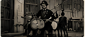
The One-Man Band
(França, Georges Méliès)
Músico toca vários instrumentos ao mesmo tempo. Humor e criatividade.
1901
➤
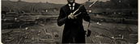
The Big Swallow
(Reino Unido, James Williamson)
Homem engole uma andorinha em um truque cômico que fez muito sucesso.
1902
☾
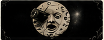
Viagem à Lua
(França, Georges Méliès)
Ícone do cinema. Viagem fantástica em que um foguete atinge o olho da Lua.
1902
⚕
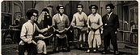
Sage-femme de première classe
(França, Alice Guy)
Comédia ficcional que mostra o talento de Alice Guy para personagens e situações cotidianas.
1903
▸
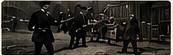
The Great Train Robbery
(EUA, Edwin S. Porter)
Marco da narrativa e da montagem. Inclui ação, suspense e o primeiro plano americano.
1904
✺
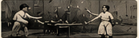
The Wonderful Living Fan
(França, Georges Méliès)
Leque ganha vida e dança. Fantasia científica com efeitos.
1904
◌
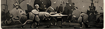
A Viagem Impossível
(França, Georges Méliès)
Viagem fantástica em balão repleta de criaturas e paisagens incríveis.
1905
✋
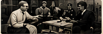
The Kleptomaniac
(EUA, Edwin S. Porter)
Comédia sobre um ladrão compulsivo. Uso criativo da câmera e da edição.
1906
⚑
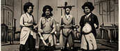
Les Résultats du Féminisme
(França, Alice Guy)
Comédia satírica sobre inversão de papéis de gênero. Surpreendente e moderna para a época.
1906
◆
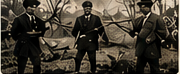
The Story of the Kelly Gang
(Austrália, Charles Tait)
Primeiro longa-metragem narrativo da história. Baseado em fatos reais.
1906
✝
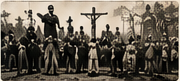
La Vie du Christ
(França, Alice Guy)
Épico religioso com mais de 30 minutos e centenas de figurantes. Antecipa os grandes épicos do cinema.
1907
▥
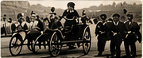
Ben-Hur
(EUA, Sidney Olcott e Frank Oakes Rose)
Épico bíblico de grande espetáculo e batalhas de bigas.
1907
▥
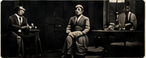
L’Enfant Prodigue
(França, Michel Carré)
Drama baseado na parábola bíblica. Um dos primeiros longas europeus conservados.
1908
✒
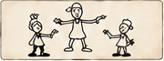
Fantasmagorie
(França, Émile Cohl)
Primeira animação desenhada do mundo. Simples e ousada.
1908
✒
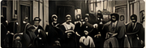
O Assassinato do Duque de Guise
(França, André Calmettes e Charles Le Bargy)
Reconstrução histórica de um crime político real.
1909
♒
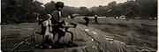
A Corner in Wheat
(EUA, D. W. Griffith)
Drama rural que mostra empatia e sensibilidade na mise-en-scène e na atuação.
1910
ϟ
Frankenstein
(EUA, J. Searle Dawley)
Primeira adaptação cinematográfica do clássico de Mary Shelley.
1911
♨
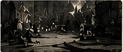
L’Inferno
(Itália, Francesco Bertolini, Adolfo Padovan e Giuseppe de Liguoro)
Primeiro filme da Divina Comédia de Dante. Ambicioso e visualmente impressionante.
1912
⚔
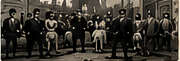
The Musketeers of Pig Alley
(EUA, D. W. Griffith)
Aventura policial com montagem avançada e perseguições empolgantes.
1912
⚔
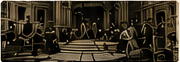
O Milagre (The Miracle)
(Reino Unido, Michel Carré)
Épico em duas partes com cerca de 2 horas de duração. Grande espetáculo internacional.
1912
✣
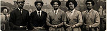
A Fool and His Money
(EUA, Alice Guy)
Um dos primeiros filmes com elenco totalmente negro conhecidos. Marco histórico de representação.
1913
🎭
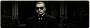
Fantômas
(França, Louis Feuillade)
Série policial sobre o mestre do crime Fantômas. Início das narrativas seriadas no cinema.
1913
🎭
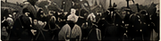
Quo Vadis?
(Itália, Enrico Guazzoni)
Épico histórico ambientado na Roma antiga. Luxuosos sets e grande apelo popular.
1914
◡
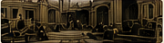
Cabiria
(Itália, Giovanni Pastrone)
Épico monumental que elevou o cinema a um novo patamar artístico e técnico.
1915
▤
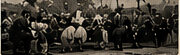
The Birth of a Nation
(EUA, D. W. Griffith)
Obra controversa, mas decisiva para a linguagem do cinema: montagem paralela, escala épica e narrativa complexa.